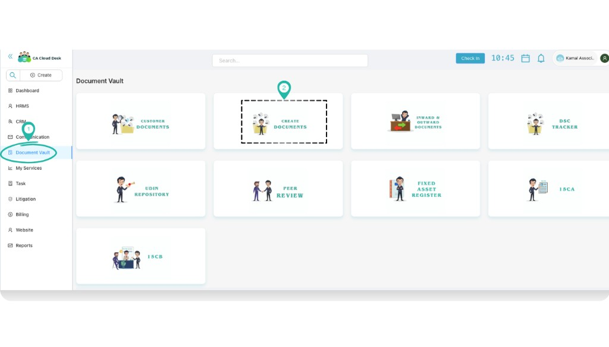
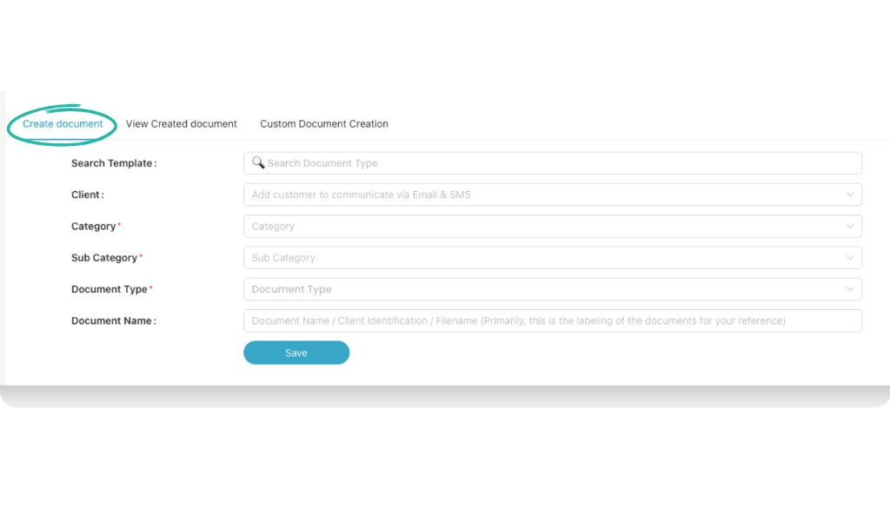
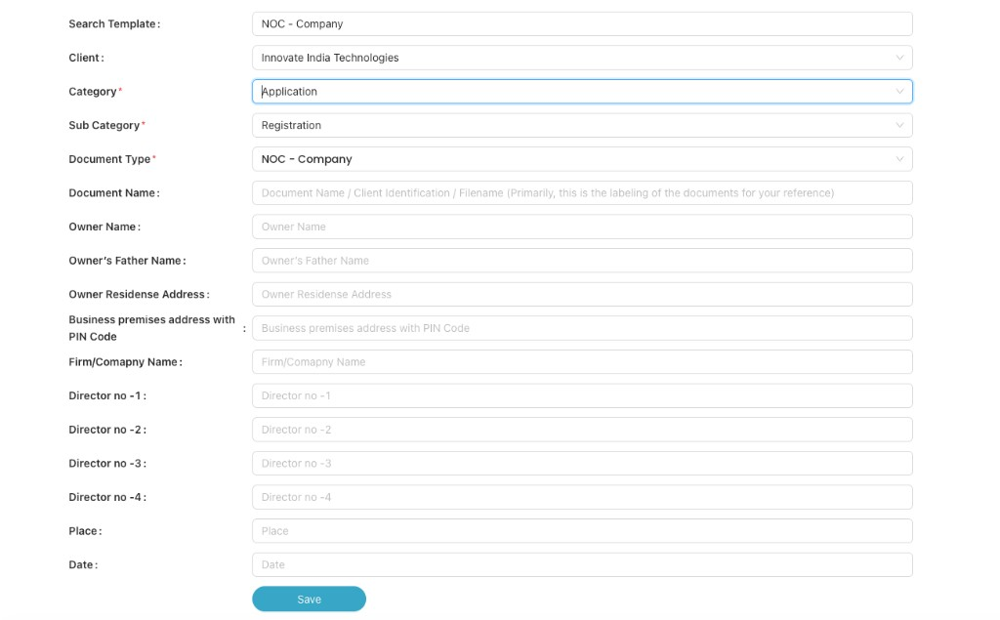
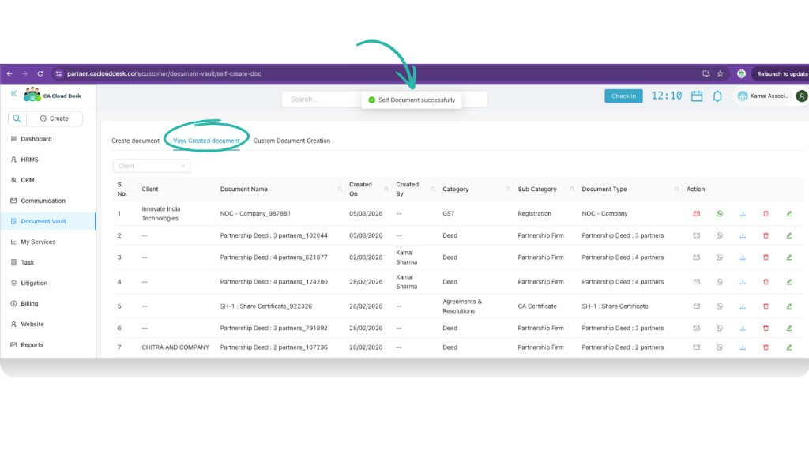
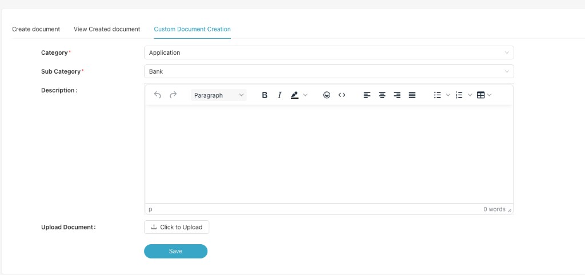

Create Document
Use the Create Document module in Document Vault to generate certificates, agreements, resolutions, and annexures in a few clicks. Fill a simple form, save, and CA Cloud Desk automatically prepares the final document for you and your clients.
Purpose of Create Document
Purpose: This module helps you create certificates, agreements, resolutions, and annexures quickly and accurately. Instead of typing everything manually in Word, you select a ready template and only fill the variable details (like client name, company name, date, directors, address, etc.).
It works as a centralized system — even if a junior user creates the document, their manager or partner can later view, edit, or delete it from the same screen.
Login and Open Create Document
- Login to your CA Cloud Desk Partnerdesk account.
- From the left panel, click Document Vault.
- On the Document Vault screen, select the Create Documents card.

From the left panel choose Document Vault, then click the Create Documents card.
Create a Document (Template Based)
On the Create document tab you select a template and fill the basic information.
-
Fill the basic information:
- Customer (optional) – Select the client if this document is for a specific customer. This allows you to share or send it to them later.
- Category – Choose the main category (for example, Agreement & Resolution, Application, etc.).
- Sub Category – Select the related sub-category (for example, Registration, CA Certificates, etc.).
- Document Type – Pick the exact format you want to generate (for example, SH-1 Share Certificate, NOC – Company).
- Document Name (optional) – Give a label to easily identify this document later (e.g. “NOC – Company_987881”).
-
Fill the variable fields:
Once you choose the Document Type, CA Cloud Desk automatically shows all the required fields for that template (for example Owner Name, Company Name, Directors, Address, Date, etc.). Fill all mandatory details carefully.
-
Save and generate the document:
Click Save. Wait for 10–15 seconds — the system will auto-generate the final document based on your inputs.

Create document tab – fill Customer, Category, Sub Category, Document Type, and Document Name, then proceed to variable fields.

After choosing a template (e.g. NOC – Company), fill all the variable fields shown on the screen.
View Created Documents
Once a document is generated, you can manage it from the View Created document tab.
- Click View Created document at the top of the Create Document screen.
- Use Client or the search bar if you want to filter by customer or document name.
- In the list you can see details like Client, Document Name, Created On, Category, Sub Category, and Document Type.
You can perform the following actions from the Action column:
- Send to Customer – Email or WhatsApp the document directly to the linked customer (only available if you selected a customer while creating the document).
- Download – Download the generated file as PDF for your records.
- Edit – Re-open the document form, update the variable fields, and save again to regenerate.
- Delete – Remove the entry if the document is no longer required.

View Created document – manage all generated documents from a single list.
Custom Document Creation
If your format is not available in the ready templates, you can still store it inside CA Cloud Desk using Custom Document Creation.
- Click the Custom Document Creation tab at the top.
- Fill the basic details:
- Category – Choose where this document belongs (for example Application).
- Sub Category – Pick the related sub category (for example Bank).
- Description – Write a short description so your team knows what this document is about.
- Upload Document: Click Click to Upload and attach your prepared Word / PDF file.
- Click Save to store this document under the selected category and sub category.

Use Custom Document Creation when you want to upload your own format instead of using a ready template.
Video Tutorial
Watch this video for a step-by-step walkthrough of using the Create Document module in CA Cloud Desk—Document Vault → Create Documents, filling template fields, and managing created documents. Click the thumbnail to watch on YouTube.